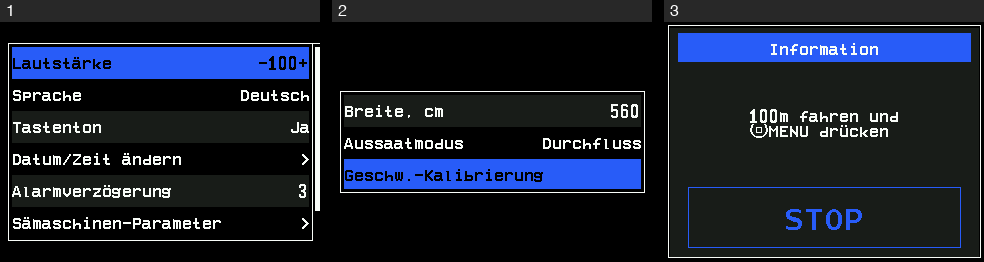
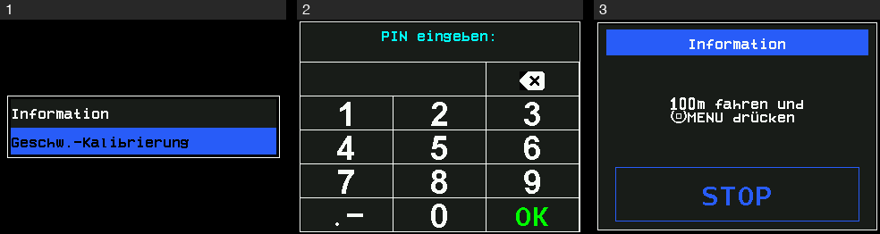

Geschwindigkeitssensor kalibrieren
Fahren Sie 100 m markierte Strecke, damit der Hectare Mini den Faktor des Fahrgeschwindigkeitssensors korrigiert – gestartet in den Sämaschinen-Parametern oder im Kontextmenü des Sensors.
Die Kalibrierung misst die Strecke, die das Panel über markierte 100 m zählt, und korrigiert „Faktor, %“ des Geschwindigkeitssensors. Führen Sie sie vor der ersten Aussaat und nach jeder Änderung am Rad oder seinem Antrieb durch. Stellen Sie zuerst „Impulse“ und „Durchm., cm“ ein (Fahrgeschwindigkeitssensor) – die Kalibrierung korrigiert den Faktor; eine falsche Impulszahl kann sie nicht ersetzen.
Markieren Sie 100 m auf ebenem Boden, möglichst nahe an den Feldbedingungen, und stellen Sie die Maschine an den Anfang.
Aus den Sämaschinen-Parametern
Heben Sie die Ebene auf „Agronom“ an (Agronomen-Ebene aktivieren).
„Einstell.“ → „Sämaschinen-Parameter“, wählen Sie „Geschw.-Kalibrierung“ und drücken Sie „MENU“.

Der Weg zur Kalibrierung: das Menü Einstellungen und die Sämaschinen-Parameter, dann das Kalibrierfenster. Das Panel zeigt „100m fahren und MENU drücken“ mit einer Schaltfläche „STOP“. Fahren Sie die markierte Strecke und halten Sie am Ende an.
Drücken Sie „MENU“ oder berühren Sie „STOP“. Das Panel zeigt „Fertig“ und schließt das Fenster von selbst.
Aus dem Kontextmenü des Geschwindigkeitssensors
Halten Sie auf dem Startbildschirm „MENU“ gedrückt, wählen Sie die Geschwindigkeitsanzeige und drücken Sie „MENU“. Das Kontextmenü öffnet sich.
Wählen Sie „Geschw.-Kalibrierung“ und drücken Sie „MENU“. Der Punkt wird nur angezeigt, solange die Maschine steht.
Auf der Ebene „Fahrer“ öffnet sich das PIN-Feld: Geben Sie die PIN der Ebene Agronom oder Service ein. Auf der Ebene „Agronom“ fragt das Panel „Sind Sie sicher?“ – drücken Sie „PLUS“ für „Ja“.

Die Kalibrierung aus dem Kontextmenü: der Punkt, die PIN-Abfrage auf der Ebene Fahrer, das Kalibrierfenster. Machen Sie weiter wie in den Schritten 3 und 4 oben.
Die hier eingegebene PIN startet nur diese eine Kalibrierung; die Zugriffsebene bleibt, wie sie war.
Während die Kalibrierung läuft, ist die Produktausbringung gesperrt; sie kehrt in den Zustand vor der Kalibrierung zurück, wenn das Fenster schließt. Das Panel wartet nach „STOP“ eine halbe Sekunde und prüft die Verbindung zum Sensor noch einmal, bevor es das Ergebnis übernimmt.
Wenn es nicht klappt
| Das Panel zeigt | Bedeutung |
|---|---|
| „Kein Geschw.-Sensor“ | Das Profil hat keinen Geschwindigkeitssensor. Die Kalibrierung startet nicht. |
| „Keine Verbindung zum Sensor! Kalibrierung abgebrochen!“ | Der Sensor antwortet nicht – beim Start oder im Moment von „STOP“. |
| „Sensor nicht überwacht! Kalibrierung abgebrochen!“ | Der Geschwindigkeitssensor ist nicht in der Überwachung. |
| „FEHLER! Traktor hat sich nicht bewegt!“ | Der Sensor hat über die Strecke gar keine Impulse geliefert. Prüfen Sie den Sensor, seinen Abstand zum Geber und sein Kabel. |
| „Kalibrierung abgebrochen!“ | Das Fenster wurde mit „BACK“ oder durch eine Berührung außerhalb geschlossen. Es hat sich nichts geändert. |
| „Ungültige PIN“ | Die auf der Ebene „Fahrer“ abgefragte PIN war falsch. Die Kalibrierung startet nicht. |
Weicht die Geschwindigkeit auf dem Panel nach der Kalibrierung weiterhin von der tatsächlichen ab, prüfen Sie „Impulse“ und „Durchm., cm“ und kalibrieren Sie erneut.
Ihre Maschine tut etwas, das diese Seite nicht beantwortet? Schreiben Sie an support@agriwelt.com — es antwortet ein Ingenieur.